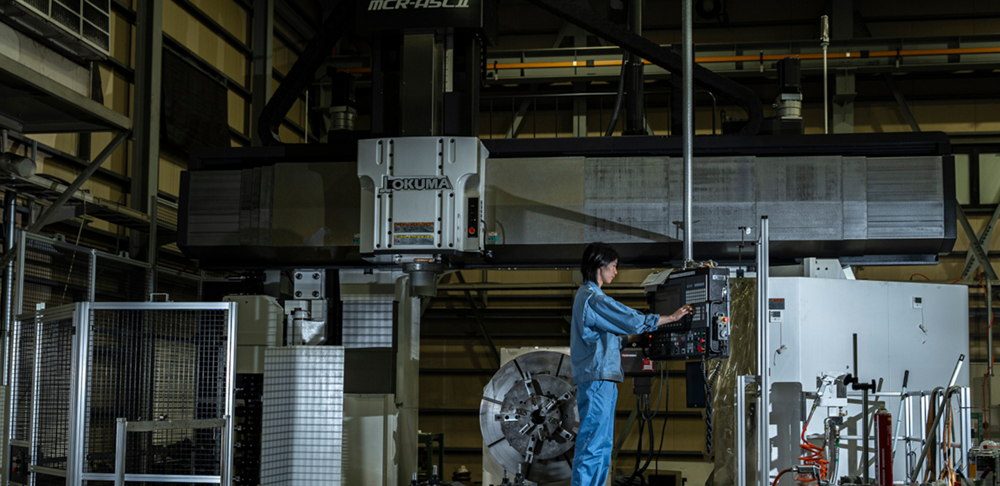
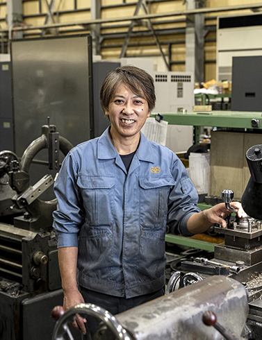
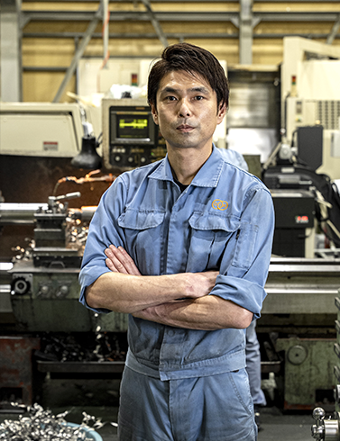

未来をともに育てる
技術者、スタッフを募集しています。
求人応募はお問い合わせフォームよりご応募ください。
スタッフ紹介
-

-
落合 信明
-
役職
品管部長
勤続年数
15年
-
仕事内容
品質管理、加工
-
どうして第一機械を選んだのか
元々製造業に興味があり、その中でも第一機械は精度の求められる仕事ということで非常にやりがいのありそうな会社だと思い選びました。誰にも真似できないことを身につけたかった気持ちが強いです。
-
仕事のやりがい
選んだ理由で加工技術について述べましたが、品質管理部長(検査課)をやらせて頂いています。最終的に当然ですが検査でOKが出たものを出荷する。一つの小さな傷があったり、0.001㎜公差外しているだけで不良扱いとなります。こういったものがお客様のもとに納品されないよう、厳重にチェックするのが私達の仕事です。プレッシャーはありますが、その分 会社にとって必要とされているある意味一番重要なポジションだと思っています。また、元々加工がしたい気持ちがありましたので空いた時には加工もしています。色んな種類の機械を触らせてもらっていますが、機械ごとに特性が違い毎日が楽しいですね！
-
-

-
増田 健志
-
役職
製造部長
勤続年数
15年
-
仕事内容
NC旋盤を使用した機械加工等
-
どうして第一機械を選んだのか
前職は自動車整備士として働いていましたが、ほぼ毎日同じ作業の繰り返しに飽きてきて・・・。飽きがこない職が近くにないかなぁと探していたところ、第一機械がヒットしました。ラインでの製造業とは違い、毎回異なる製品の製作ができるという所に惹かれました。
-
仕事のやりがい
私の場合、会社に“仕事”をやりにいく、ではなく会社に“遊び”に行くというのが正しいですかね・・・。仕事をしているという感覚はなく、遊ばせてもらっています。製品一つ一つ、どう工程を組んで加工すれば製品として成り立つのか・・・。わかりやすく言えば毎日パズルゲームをしに会社に来ています。（笑）一つ工程を間違えば不良品になる。自分の考え方次第で製品の出来栄えとして現れるのが面白いですね。
-
募集要項
-
会社名
〒360-0238
埼玉県熊谷妻沼西2丁目15番工場団地内 -
仕事内容
金属機械加工(汎用旋盤、NC旋盤、マシニングセンタを使用した作業)
-
募集職種
技術職
事務職 -
雇用形態
正社員
-
必要資格
不問 （※40歳以上は経験者に限る）
-
就業時間
8:00 - 17:00
休憩時間 75分
※残業はほぼ無し -
勤務形態
土曜、日曜休日
年末年始休暇、GW休暇、夏季休暇あり
会社カレンダーによる(年間休日120日) -
給与／支払方法
給与22万～(能力に応じ決定)
支払方法月末締め 毎月13日
モデルケース入社1年目(高卒) 年収:400万
入社3年目(中途)年収:700万 -
加入保険等
雇用、労災、健康、厚生、財形、確定拠出年金、退職金制度あり（勤続3年以上）
-
※試用期間3ヶ月（同条件）
賃貸を使用する方は家賃の約半額補助(但し、単身者に限る)